Lab2: Single Cycle CPU#
Introduction#
In Lab2, you are tasked with implementing a Single Cycle CPU based on the RISC-V ISA. Upon completing this lab, you should have a deeper understanding of CPU architecture and the RISC-V instruction set.
Don’t panic! This lab is not as difficult as it might seem. To successfully implement the RISC-V CPU, we encourage you to study the functionality of each component and understand how they cooperate. We will also introduce a useful RISC-V simulator, Ripes, which demonstrates the CPU workflow step by step.
Lab Source Code#
The TAs have prepared a template for you. You can follow the template or modify it as needed. However, there are certain elements you should not change:
Registers
Instruction Memory
Data Memory
CPU I/O interface and register instance names
In the provided source code, we include a simple instruction file, TEST_INSTRUCTIONS.txt, containing machine code generated from TEST_INSTRUCTIONS.asm.
Important
The rst signal is active low, which means the module will reset when the rst signal is set to zero. You should follow this design in your implementation.
Ripes#
Ripes is a visual computer architecture simulator and assembly code editor designed for the RISC-V instruction set architecture.
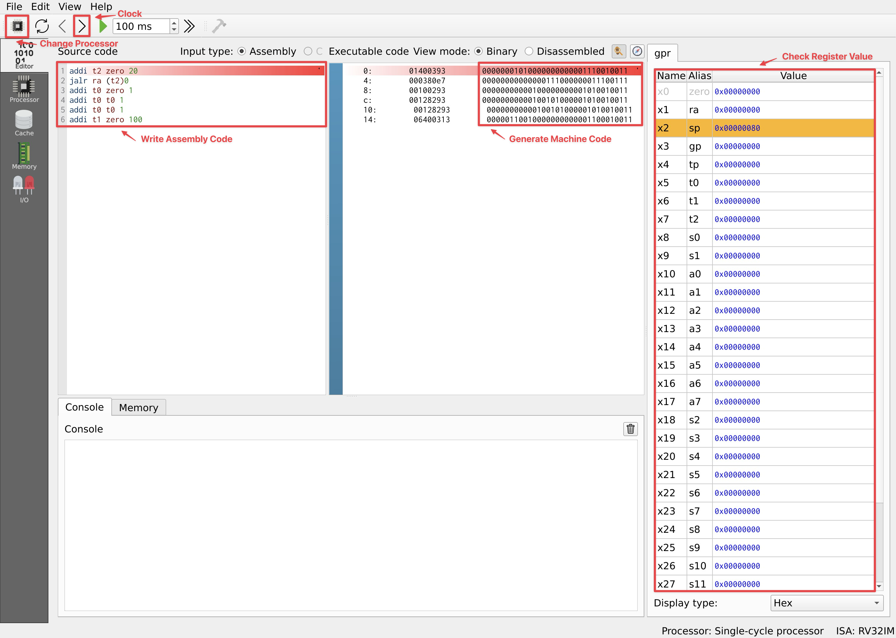
As shown in the picture above, you can write your own assembly code, clock the processor, and verify the register values.
You can copy the generated machine code into TEST_INSTRUCTIONS.txt in the following format to run your code on your CPU design. Each line in the file should contain 8 bits. A single 4-byte instruction is represented by 4 lines, and the file should end with a new empty line.
addi t2 zero 20
jalr ra (t2)0
addi t0 zero 1
addi t0 t0 1
addi t0 t0 1
addi t1 zero 100
00000001
01000000
00000011
10010011
00000000
00000011
10000000
11100111
00000000
00010000
00000010
10010011
00000000
00010010
10000010
10010011
00000000
00010010
10000010
10010011
00000110
01000000
00000011
00010011
Important
Ensure that you change the settings in Ripes to match the constraints of the register values specified for this lab. 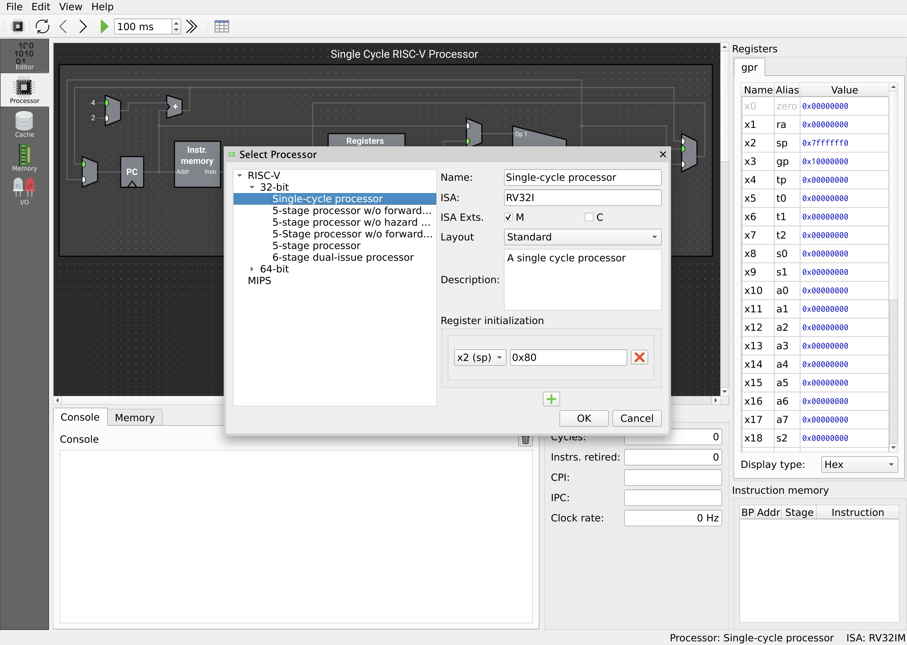
Single Cycle CPU#
Architecture#
You can follow the architecture diagram to implement a single-cycle CPU.
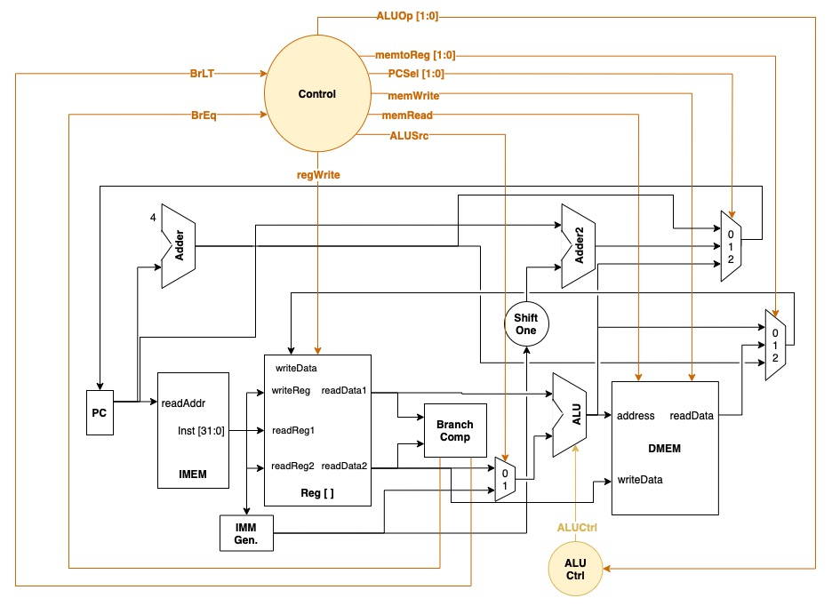
Instruction#
Implement the following instructions. The RV32I ISA layout is provided below.
add
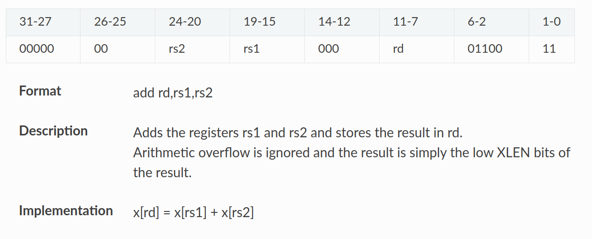addi
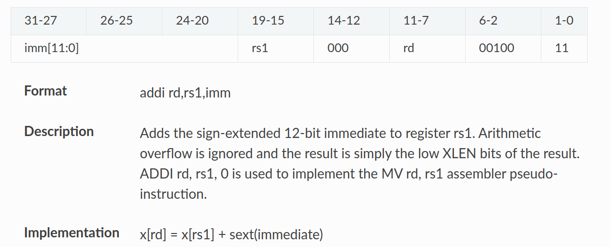sub
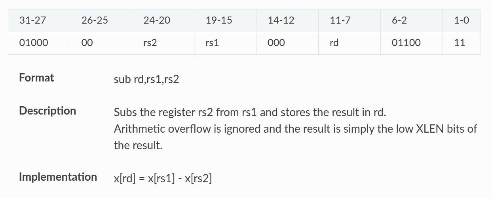and
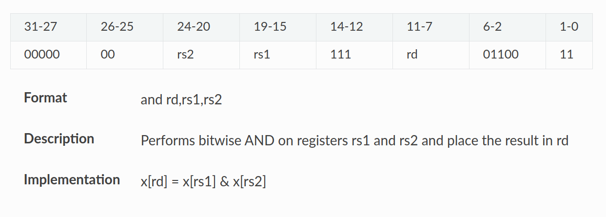andi
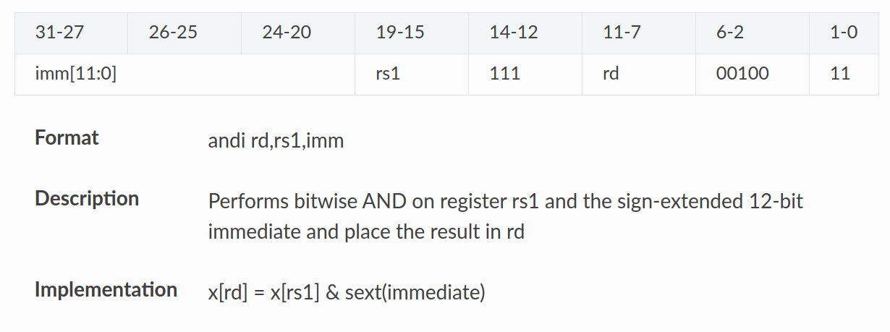or
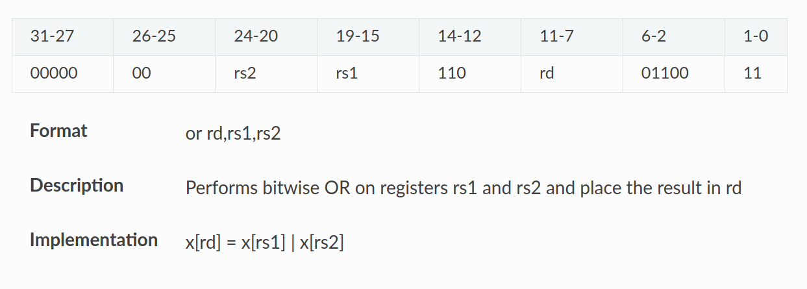ori
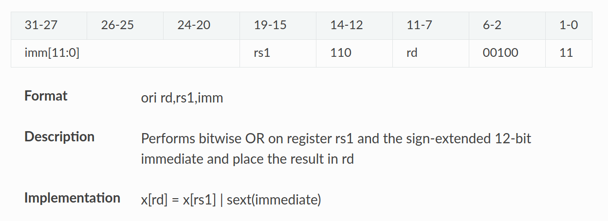slt
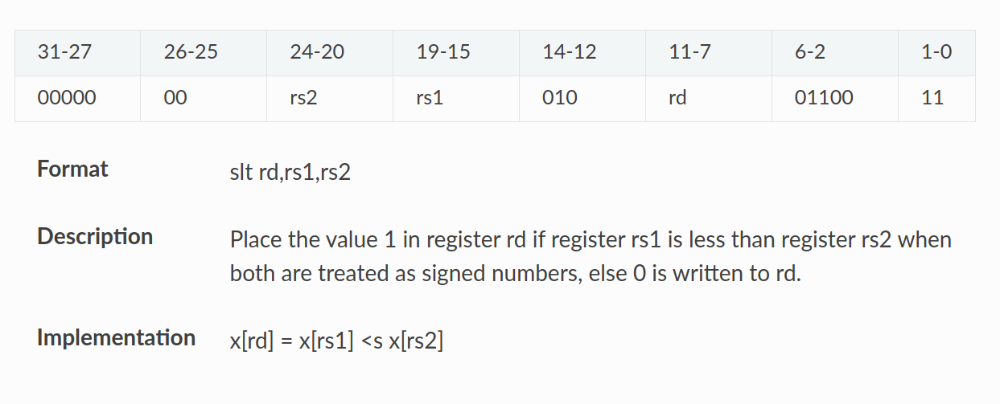slti
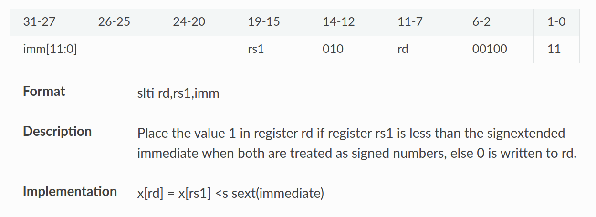lw
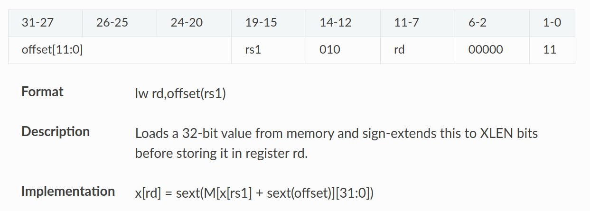sw
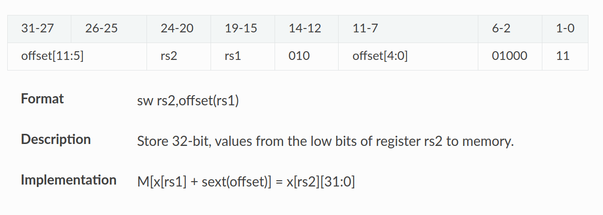beq
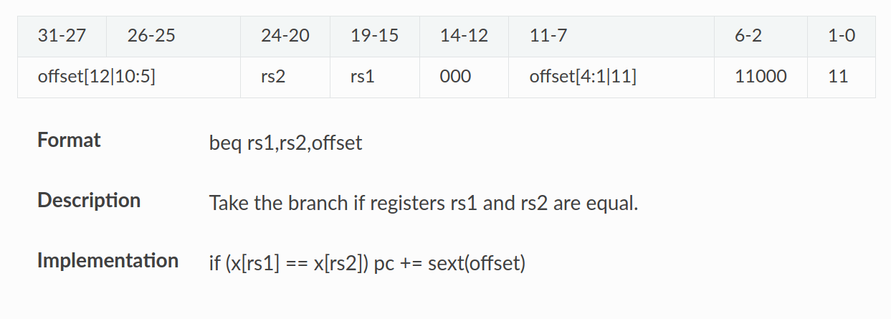bne 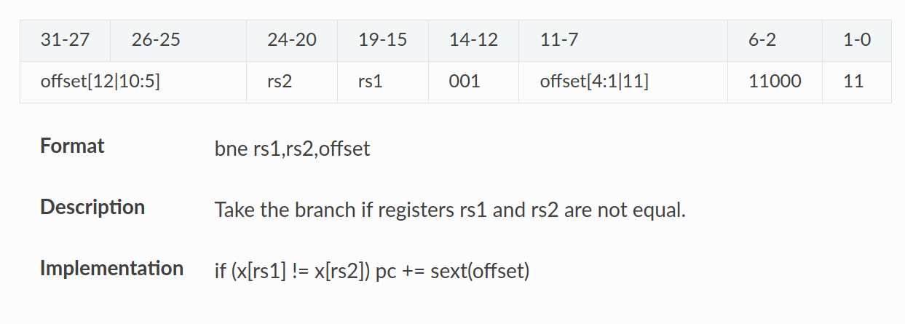
blt 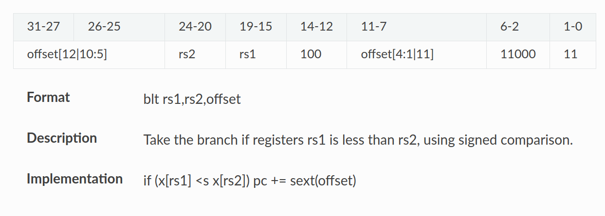
bge 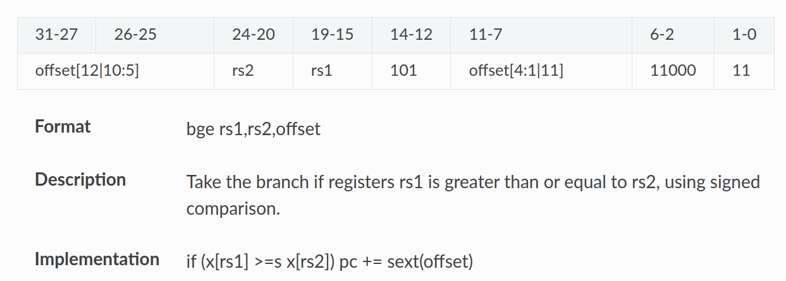
jal
jalstorespc+4inregs[rd], executespc = pc + imm << 1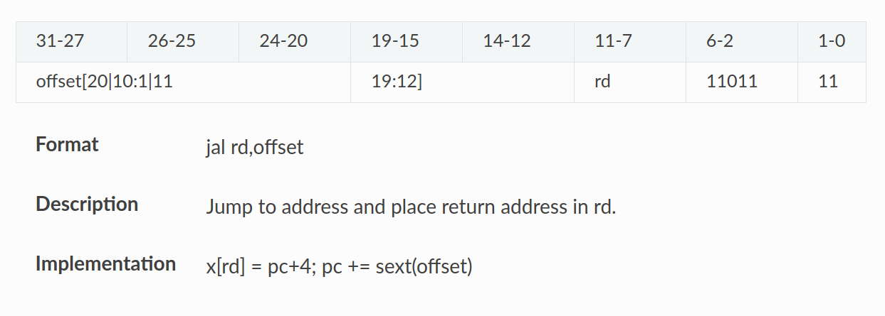jalr
jalrstorespc+4inregs[rd], exectuespc = regs[rs1] + imm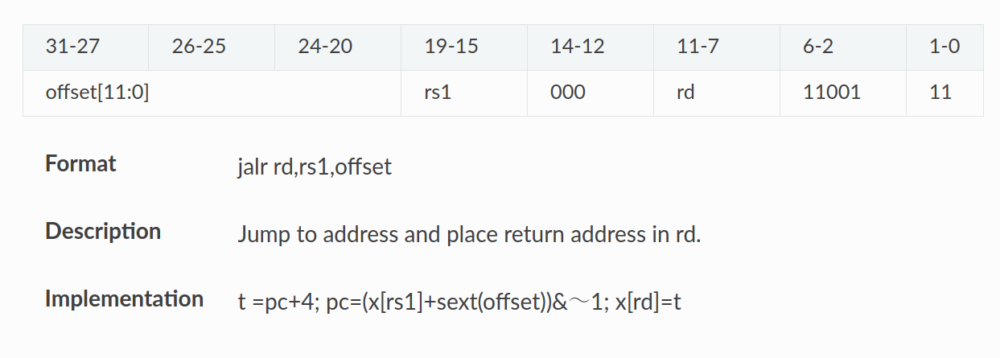
Important
All operations are signed. You must follow this ISA table to implement your instructions: 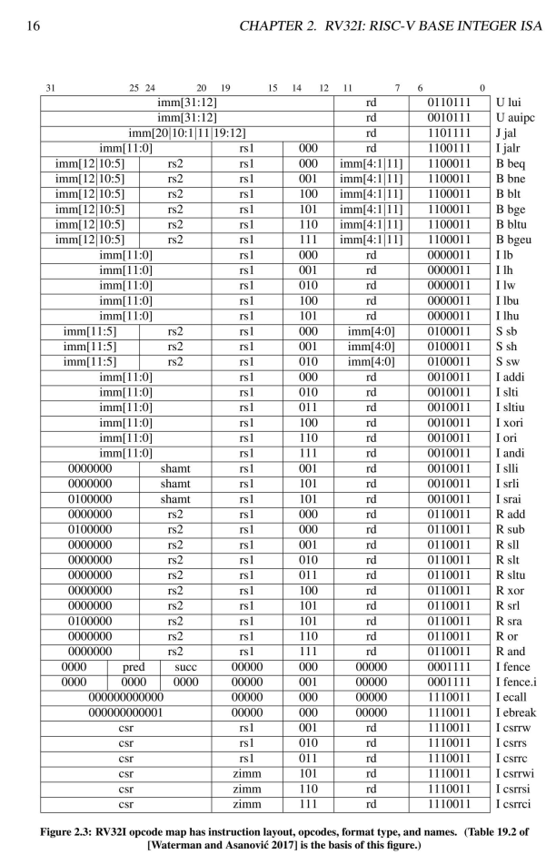
Requirements#
Implement your RISC-V single-cycle CPU. Your CPU should support the following RISC-V ISA instructions:
Arithmetic and Logical Operations:
add,addi,sub,and,andi,or,ori,slt,sltiMemory Operations:
lw,swBranch Operations:
beq,bne,blt,bgeJump Operations:
jal,jalr
TAs have prepared a Verilator testbench and some TEST_INSTRUCTION.txt files to grade your design. The correctness will be verified by comparing the register values.
Warning
Do not modify the register, instruction memory, or CPU I/O interface, or you will receive 0 points.
Submission#
Please submit your source code as a ZIP file to E3. The name of the ZIP file should be lab2_<student_id>.zip, and the structure should be as follows:
lab2_<student_id>.zip
├── lab2_<student_id>
│ ├── ALU.v
│ ├── ALUCtrl.v
│ ├── Adder.v
│ ├── BranchComp.v
│ ├── Control.v
│ ├── DataMemory.v
│ ├── ImmGen.v
│ ├── InstructionMemory.v
│ ├── Mux2to1.v
│ ├── Mux3to1.v
│ ├── PC.v
│ ├── Register.v
│ ├── ShiftLeftOne.v
│ └── SingleCycleCPU.v
You can check if the unzipped file contains the folder structure as described by running:
unzip lab2_<stduent_id>.zip
tree lab2_<stduent_id>
Warning
The deadline for submission is x/xx 23:59. Any incorrect format will result in a 10-point deduction.
Hints#
Read the textbook first to understand each submodule’s functionality.
Use waveform debugging to simplify the debugging process.
Try generating your own RISC-V machine code using Ripes. You can write simple assembly code to verify if your implementation works as expected.
Reference#
Computer Organization and Design RISC-V Edition, CH4